<div class="bottom-banner">
  <div class="banner-left">
    
  </div>
  <div class="banner-right">
    Made with <span class="heart">❤️</span> and 
    <a href="https://genomicsaotearoa.github.io/reproducibility_with_git_and_quarto/quarto_overview.html" target="_blank" style="color: #4fc3f7; text-decoration: underline;">Quarto</a>
  </div>
</div>